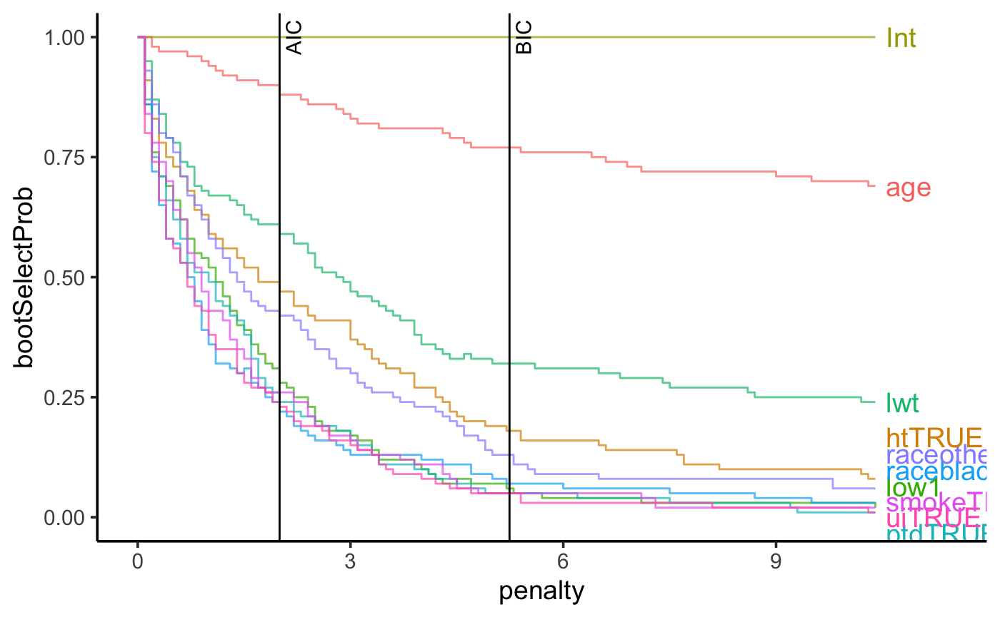
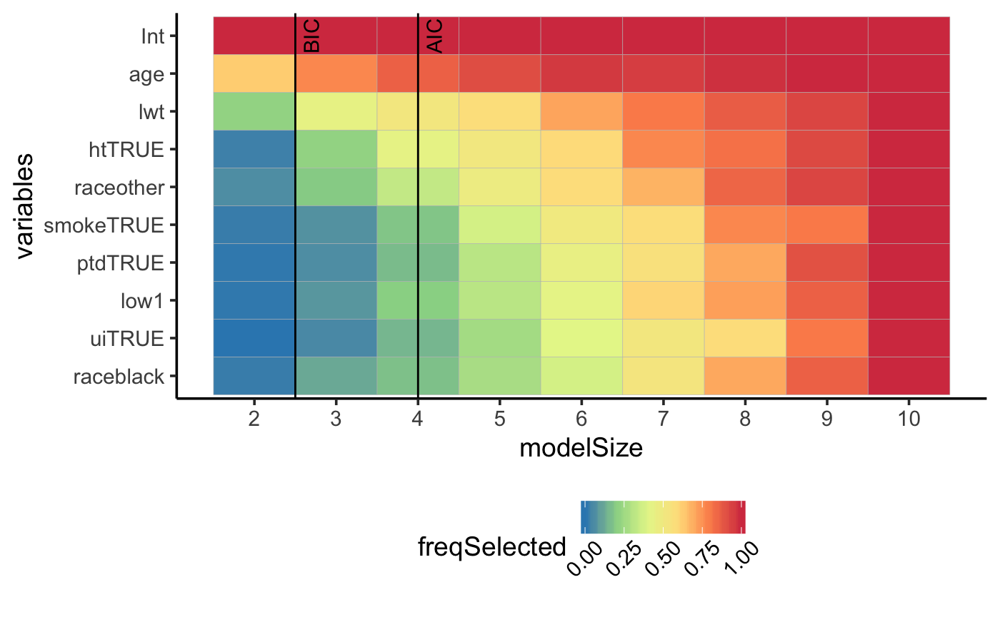
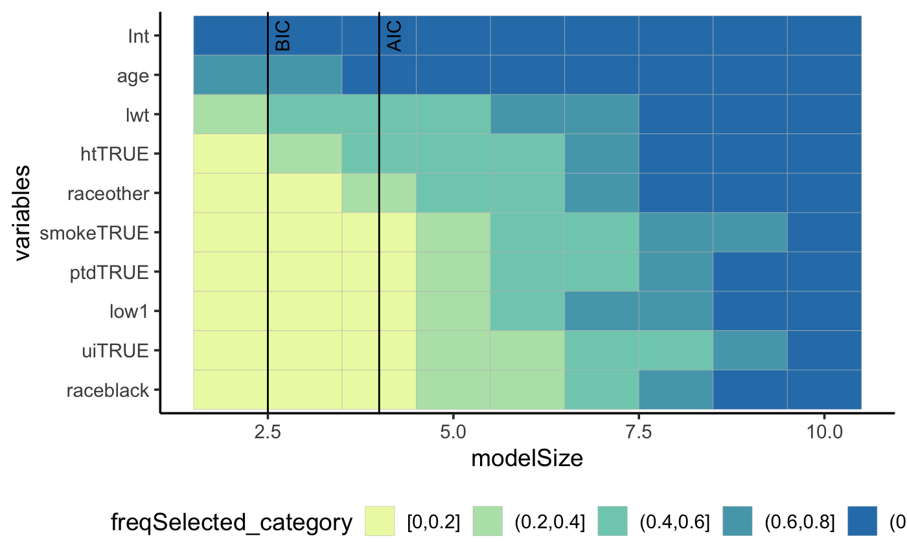

Introduction
In this document, we will perform APES on the birthweight data from the MASS package.
There are 189 observations and 8 variables. The response variable is the ftv variable, which records the number of physician visits during the first trimester.
Setting up the data
## ── Attaching packages ────────────────────────────────────────────────────────────────────────────── tidyverse 1.2.1 ──## ✔ ggplot2 3.1.0 ✔ purrr 0.3.1
## ✔ tibble 2.0.1 ✔ dplyr 0.8.0.1
## ✔ tidyr 0.8.3 ✔ stringr 1.4.0
## ✔ readr 1.3.1 ✔ forcats 0.4.0## ── Conflicts ───────────────────────────────────────────────────────────────────────────────── tidyverse_conflicts() ──
## ✖ dplyr::filter() masks stats::filter()
## ✖ dplyr::lag() masks stats::lag()
## ✖ dplyr::select() masks MASS::select()Single run of APES on diabetes data
Due to the small size of this data, we will use the leaps estimator.
Since there are some factor variables, we will need to manually create the model matrix/design matrix.
Using the leaps estimator
## Estimate Std. Error z value Pr(>|z|)
## (Intercept) -1.69 0.53 -3.20 0.00
## low1 0.04 0.20 0.18 0.86
## age 0.04 0.02 2.69 0.01
## lwt 0.00 0.00 1.65 0.10
## raceblack 0.00 0.26 0.00 1.00
## raceother -0.17 0.20 -0.83 0.41
## smokeTRUE -0.08 0.18 -0.43 0.67
## ptdTRUE 0.00 0.24 -0.02 0.98
## htTRUE -0.64 0.44 -1.47 0.14
## uiTRUE -0.15 0.26 -0.57 0.57## [1] 189 9## [1] 189apes_poisson_leaps = apes_poisson(
x = x,
y = y,
mu = fullModel$fitted.values,
k = 1:ncol(x),
estimator = "leaps")## [1] "Finished solving linear regression approximation"Bootstrapping using leaps version
In most practical cases, a single run of any variable selection procedure is not stable. In order to explore stability of variable selection in this case, we can bootstrap on the 189 observations. The implementation of APES is fast enough that this can be done relatively fast.
listResult = APES::boot_apes_poisson(
x = x,
y = y,
mu = fullModel$fitted.values,
k = 1:ncol(x),
estimator = "leaps",
nBoot = 100)Variable selection plot

## $apesMleBetaBinaryPlotdf
## # A tibble: 90 x 5
## variables modelName freqSelected modelSize freqSelected_category
## <fct> <fct> <dbl> <int> <fct>
## 1 Int apesModel_2 1 2 (0.8,1]
## 2 Int apesModel_3 1 3 (0.8,1]
## 3 Int apesModel_4 1 4 (0.8,1]
## 4 Int apesModel_5 1 5 (0.8,1]
## 5 Int apesModel_6 1 6 (0.8,1]
## 6 Int apesModel_7 1 7 (0.8,1]
## 7 Int apesModel_8 1 8 (0.8,1]
## 8 Int apesModel_9 1 9 (0.8,1]
## 9 Int apesModel_10 1 10 (0.8,1]
## 10 low1 apesModel_2 0.01 2 [0,0.2]
## # … with 80 more rows
##
## $variableTilePlot
##
## $variableTilePlot_category

Session Info
## R version 3.5.2 (2018-12-20)
## Platform: x86_64-apple-darwin15.6.0 (64-bit)
## Running under: macOS High Sierra 10.13.6
##
## Matrix products: default
## BLAS: /Library/Frameworks/R.framework/Versions/3.5/Resources/lib/libRblas.0.dylib
## LAPACK: /Library/Frameworks/R.framework/Versions/3.5/Resources/lib/libRlapack.dylib
##
## locale:
## [1] en_AU.UTF-8/en_AU.UTF-8/en_AU.UTF-8/C/en_AU.UTF-8/en_AU.UTF-8
##
## attached base packages:
## [1] stats graphics grDevices utils datasets methods base
##
## other attached packages:
## [1] directlabels_2018.05.22 mplot_1.0.2
## [3] forcats_0.4.0 stringr_1.4.0
## [5] dplyr_0.8.0.1 purrr_0.3.1
## [7] readr_1.3.1 tidyr_0.8.3
## [9] tibble_2.0.1 ggplot2_3.1.0
## [11] tidyverse_1.2.1 MASS_7.3-51.1
## [13] APES_0.4.2
##
## loaded via a namespace (and not attached):
## [1] nlme_3.1-137 fs_1.2.6 lubridate_1.7.4
## [4] RColorBrewer_1.1-2 httr_1.4.0 rprojroot_1.3-2
## [7] tools_3.5.2 backports_1.1.3 doRNG_1.7.1
## [10] utf8_1.1.4 R6_2.4.0 lazyeval_0.2.1
## [13] colorspace_1.4-0 withr_2.1.2 tidyselect_0.2.5
## [16] compiler_3.5.2 cli_1.0.1 rvest_0.3.2
## [19] xml2_1.2.0 plotly_4.8.0 desc_1.2.0
## [22] pkgmaker_0.27 labeling_0.3 scales_1.0.0
## [25] quadprog_1.5-5 pkgdown_1.3.0 commonmark_1.7
## [28] digest_0.6.18 rmarkdown_1.11 pkgconfig_2.0.2
## [31] htmltools_0.3.6 bibtex_0.4.2 htmlwidgets_1.3
## [34] rlang_0.3.1 readxl_1.3.0 rstudioapi_0.9.0
## [37] shiny_1.2.0 generics_0.0.2 jsonlite_1.6
## [40] crosstalk_1.0.0 gtools_3.8.1 magrittr_1.5
## [43] leaps_3.0 fansi_0.4.0 Rcpp_1.0.0
## [46] munsell_0.5.0 furrr_0.1.0 stringi_1.3.1
## [49] yaml_2.2.0 plyr_1.8.4 grid_3.5.2
## [52] parallel_3.5.2 listenv_0.7.0 promises_1.0.1
## [55] shinydashboard_0.7.1 crayon_1.3.4 lattice_0.20-38
## [58] haven_2.1.0 hms_0.4.2 knitr_1.21
## [61] pillar_1.3.1 rngtools_1.3.1 reshape2_1.4.3
## [64] codetools_0.2-16 glue_1.3.0 evaluate_0.13
## [67] data.table_1.12.0 modelr_0.1.4 httpuv_1.4.5.1
## [70] foreach_1.4.4 cellranger_1.1.0 gtable_0.2.0
## [73] future_1.11.1.1 assertthat_0.2.0 xfun_0.5
## [76] mime_0.6 xtable_1.8-3 broom_0.5.1
## [79] roxygen2_6.1.1 later_0.8.0 viridisLite_0.3.0
## [82] iterators_1.0.10 registry_0.5 memoise_1.1.0
## [85] globals_0.12.4 ellipsis_0.1.0